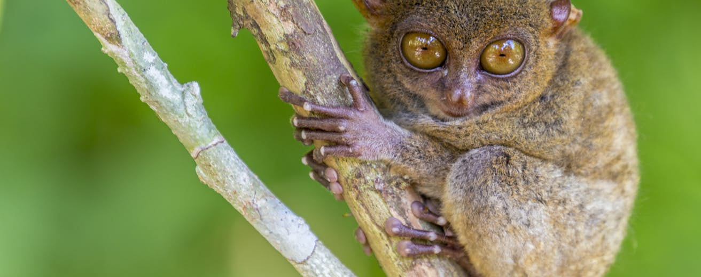
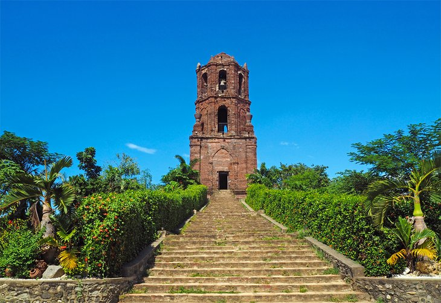

Cebu
The island of Cebu, in the central Visayas region, is considered the port to some of the best diving and snorkeling in the Philippines.

Bohol
The island of Bohol in the Philippines' central Visayas region runs at a slower pace, and it's a destination that showcases the country's natural beauty.

Banaue
The rice terraces of Banaue are one of the most striking things to see in the Philippines.

Vigan
The historical city of Vigan in the northern Philippines is one of the most charming towns to visit in the Luzon region.

Davao
Davao City is the main city in the southern Philippine region of Mindanao.